| region | km3 |
|---|---|
| Central America and Caribbean | 735 |
| Central Asia | 242 |
| East Asia | 3410 |
| Eastern Europe | 4448 |
| Middle East | 484 |
| North America | 6077 |
| Northern Africa | 47 |
| Oceania | 902 |
| South America | 12724 |
| South Asia | 1935 |
| Sub-Saharan Africa | 3884 |
| Western & Central Europe | 2129 |
Lecture 1a - Introduction to Data Visualisation
In this lecture, we look into the concept of exploratory data analysis and learn what makes good (and bad) data visualisation.
Exploratory Data Analysis
- Exploratory data analysis (EDA) should be one of the first steps in analysing any data set and was pioneered as a discipline of its own by John Tukey in the 1960s and 1970s.
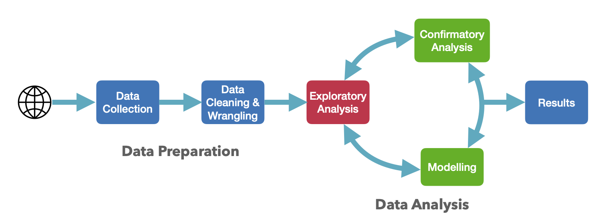
In the words of Tukey:
- “Exploratory data analysis is detective work — in the purest sense — finding and revealing the clues.”
- “Exploratory data analysis can never be the whole story, but nothing else can serve as the foundation stone — as the first step.”
So, the definition of EDA is fairly self-explanatory. We seek to explore the data, by asking questions and looking for clues to help us better understand the data. The purpose is generally to gain sufficient information to make reasoned and justifiable hypotheses to explore with more formal methods, or to identify sensible modelling approaches (and exclude others). The features and insights we gather while exploring will suggest what appropriate strategies for our subsequent analysis.
Therefore, it is simply good practice to try to understand and gather as many insights from the data as possible before even attempting before any modelling or inference. Without a solid understanding of the data, we do not know if the techniques we apply are appropriate, and so we risk our inferences and conclusions being invalid.
That said, EDA is not a one-off process. It is often iterative, going back and forth between exploration and modelling/analysis as each part of the process can suggest new questions or hypotheses to investigate.
Exploratory Data Analysis is not a formal process and it does not have strict rules to follow or methods to apply: the overarching goal is simply to develop an understanding of the data set. However, typically we do try and do this without fitting any complex models or making assumptions about our data. We’re looking to see what the data tell us, not what our choice of technique or model says. We have insufficient knowledge of the properties of our data to exploit sophisticated techniques.
The “detective work” of EDA is essentially looking for clues in the data that will reveal insights about what is actually going on with the problem from which they come — but this requires looking both in the right places and with the right magnifying glass.
Data sets rarely arrive with a manual, or a shopping list of specific features to investigate. Absent any formal structure, the best approach is to pursue any lead that occurs to you, and ask questions - lots of them — some will lead to insights, others will be dead ends.
Some obvious ‘clues’ and features to investigate in an unseen data set are: 1 Features and properties of individual variables and collections 2 Identifying important and unimportant variables 3 Identifying structure, patterns and relationships between variables 4 Anomalies, errors, and outliers 5 Variation and distributions 6 Missing values
As we’re only exploring the data with minimal assumptions, the tools of EDA must be mathematically quite simple and robust as we should not be relying on assumptions of distributions or structure that may not be justified. We rely primarily on:
- Statistical summaries
- Graphics and visualisations
Our focus will be extensively on making a graphical exploration of the data.
Data Visualisation
Data visualisation is the creation and study of the visual representation of data.
Like EDA, there is no complex theory about graphics — in fact, there is not much theory at all! The topics are not usually covered in depth in books or lectures as they build on relatively simple statistical concepts. Once the basic graphical forms have been described, textbooks usually move on to more mathematical ideas such as proving the central limit theorem.
Exploratory Data Analysis through investigation of data graphics is sometimes called Graphical Data Analysis (GDA).
There are some standard plots and graphics that are applicable in some fairly generaly situations, but
A good visualisation reveals the data, and communicates complex ideas with clarity, precision and efficiency. Some features of a good data visualisation would be
- Show the data!
- Induce the viewer to think about the substance rather than the methodology, design, etc.
- Avoid distorting what the data have to say
- Present many numbers in a small space
- Make large data sets coherent
- Encourage comparisons between different pieces of data
Good data visualisations can communicate the key features of complex data sets more convincingly and more effectively than the raw data often can achieve.
Typically, data visualisation is used for one of two purposes:
1- Analysis - used to find patterns, trends, aid in data description, interpretation * Goal: the “Eureka!” moment * Many images for the analyst only, linked to analysis/modelling * Typically many rough and simple plots used to detect interesting features of the data and suggest directions for future investigation, analysis or modelling
2- Presentation - used to attract attention, make a point, illustrate a conclusion * Goal: The “Wow!” moment. * A single image suitable for a large audience which tells a clear story * Once the key features and behaviours of the data are known, the best graphic can be produced to show those features in a clear way. Often targetting a less technical audience.
For example, the visualisation below shows a presentation of the number of cases of measles per 100,000 for the 50 US states over time. The impact of vaccination on the levels of measles is striking and clear.
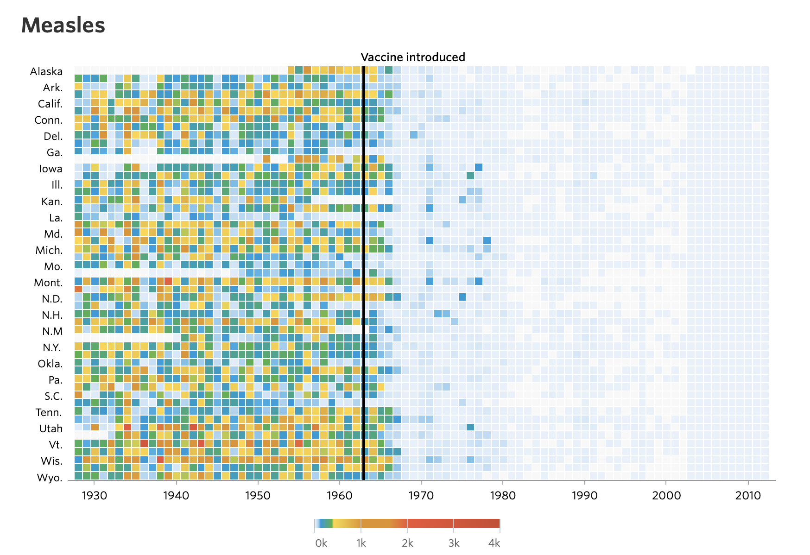
Presentation quality graphics can venture into the realm of data art, but this is rather beyond what we could hope to achieve in our short course. These visualisations, often called infographics, try to present data in a non-technical way that can easily be understood by non-experts. For example, the following graph illustrates the scale of the amount of waste plastic from plastic bottle sales over 10 years, relative to New York.

Making Effective Data Visualisation
First, a little bit of historical context. Data visualisation (and statistics) are relatively new disciplines - relative to the rest of mathematics. For data visualisation, William Playfair (1759-1823) is often credited for pioneering many of the graphical forms we still use today. Slightly later, Florence Nightingale (1820-1910) became one of the first people to persuade the public and influence public policy with data visualisation. Despite being better known for her achievements in nursing, Florence was the first female member of the Royal Statistical Society. Her rose diagrams were an innovative combination of pie chart and time series, and were used to illustrate the terrible conditions suffered by soldiers in the Crimean war.
These early visualisations were difficult to produce and required a combination of art and intuition. The 20th century brought computers and the ability to process and visualise increasing amounts of data with ease. Ultimately, a number of standard graphics were developed that exploit our visual perception to interpret complex data - most of which we have seen in the course so far.
So, despite having a long history, what is it about data visualisation that is so effective that we continue to do it? The answer is that depicting data graphically can be extremely effective as it takes advantage of the human brain’s natural strengths at quickly and efficiently processing visual information. Understanding this will help you make better visualisations!
The human brain has developed many subconscious natural abilities to process visual information and make sense of the world around us. We are constantly processing and interpreting the visual signals from our eyes and much of this happens sub-consciously without any actual effort. The reason for this is that this analysis relies on the visual perception part of our brain, rather than cognitive “thinking” part.
Visual perception is the ability to see, interpret, and organise our environment. It’s fast and efficient, and happens automatically. Cognition, which is handled by the cerebral cortex, is much slower and requires more effort to process information. So, presenting data visually exploits our quick perception capabilities and helps to reduce cognitive load.
To illustrate these difference consider the following table and plots. From which of the three presentations of the data is it easiest to identify which 3 regions have the highest available renewable water resources?
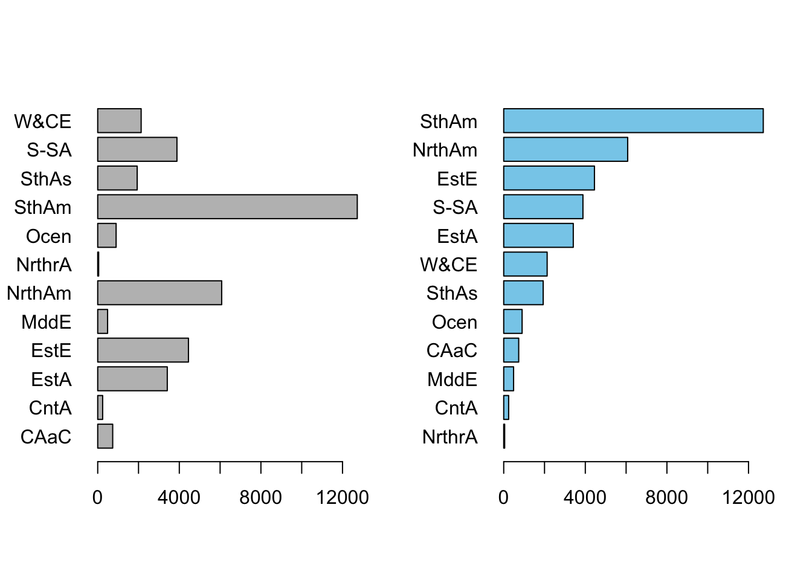
The table takes longer to process, as we must read each row, process that information into numbers, that we then compare. The first plot abstracts this for us by using bigger bars for bigger numbers - this makes it much easier to assess the sizes, but we must compare many sets of bars to decide which are the largest. The final plot simplifies this for us, by sorting the bars by size.
The difference in speeds at which our human senses can process information was compared by Danish physicist Tor Nørretranders to standard computer throughputs.
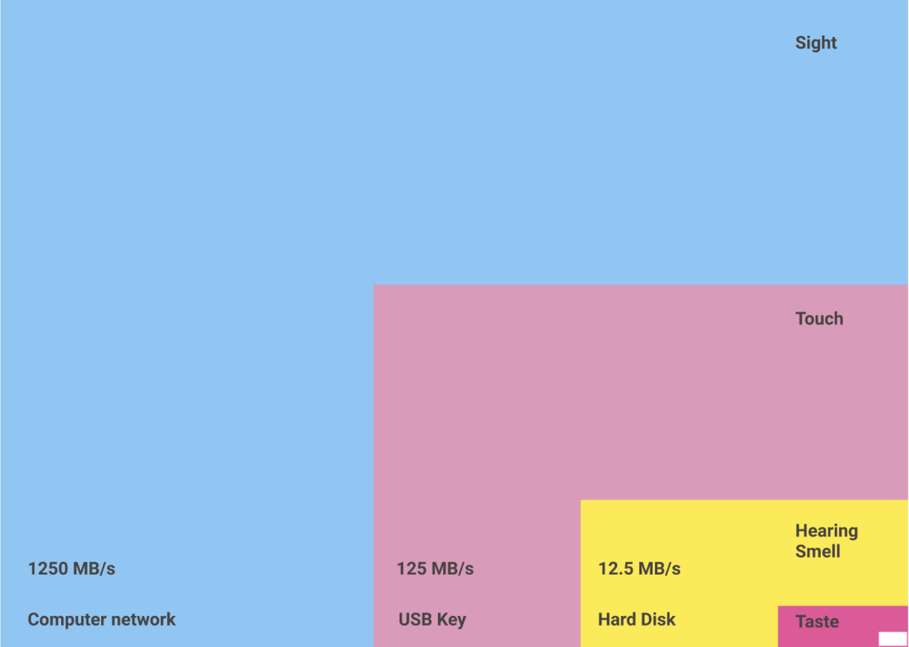
Notice how sight comes out on top as it has the same bandwidth as a computer network. This is followed by touch, and hearing, with taste having the same processing power as a pocket calculator. The small white square in the bottom-right corner is the portion of this processing of which we are cognitively aware.
Not only do our visual senses dominate our sensory processing, but the amount of data and the speed with which we process are far higher than we are aware of. This is known as pre-attentive processing. Pre-attentive processing is subconscious and fast - it take 50-500ms for the eye and brain to process and react to simple visual stimuli. This is clearly much faster thanour brain could process the data table in the small example above. So, turning our data into visual representations means we can process far more information much more quickly.
Encoding Data
The key idea of data visualisation is that quantitative and categorical information is encoded by visual variables that can be easily perceived. Visual variables are “the differences in elements of a visual as perceived by the human eye”. Essentially these are the fundamental ways in which graphic symbols can be distinguished. When we view a graph, the goal is to decode the graphical attributes and extract information about the data that was encoded
A number of authors have proposed sets of visual variables that are easy to detect visually:
- Position
- Length
- Direction
- Angle
- Area
- Shape
- Colour, Texture
- Volume
Position - Along a Common Scale
When using a common coordinate system, position is the easiest feature to recognise and evaluate with regard to elements in space.
Example: Scatter plots, boxplots
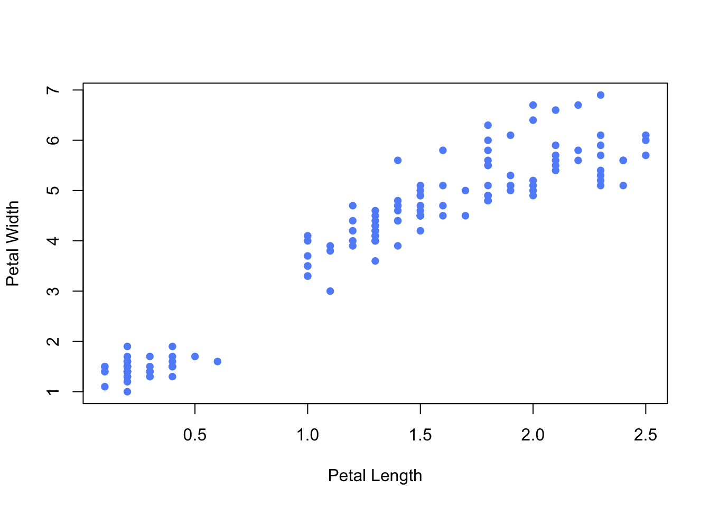
Position - Along Nonaligned, Identical Scales
It’s easy to compare separate scales repeated with the same axis even if they are not aligned.
Example: Lattice/Grid/Facet plots
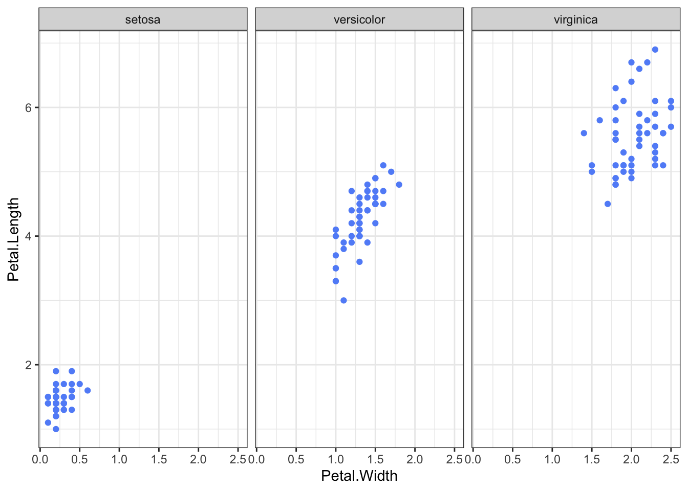
Length
Length can effectively represent quantitative information. The human brain easily recognises proportions and evaluates length, even if the objects are not aligned.
Example: Bar charts, boxplots
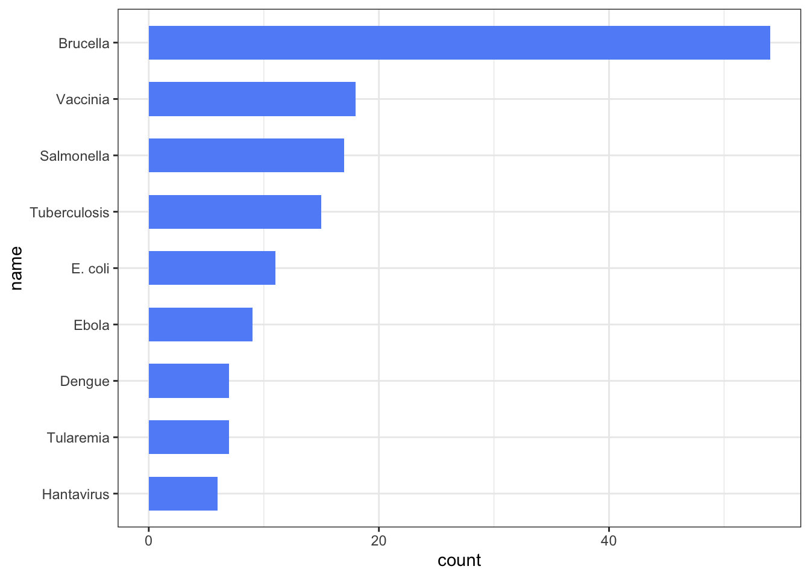
Angle
Angles help to make comparisons by providing a sense of proportion. Angles are harder to evaluate than length or position, but pie charts are as efficient with small numbers of categories.
Example: Pie charts
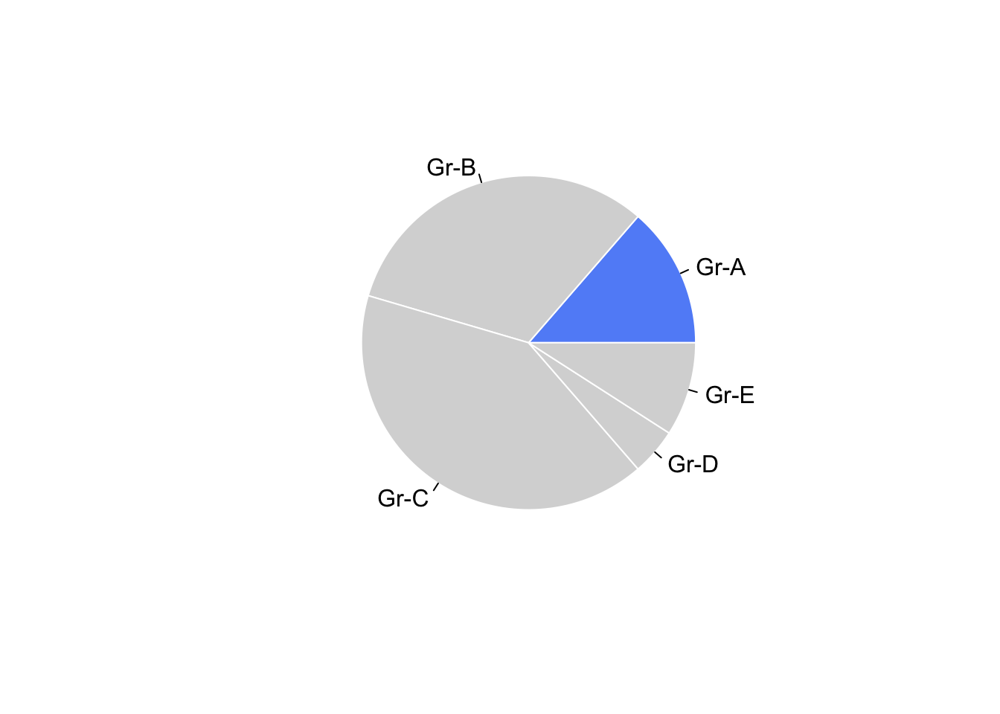
Area
The relative magnitude of areas is harder to compare versus the length of lines. The second direction requires more effort to process and interpret.
Example: Bubble plots, Treemaps, Mosaic plots, Corrplots
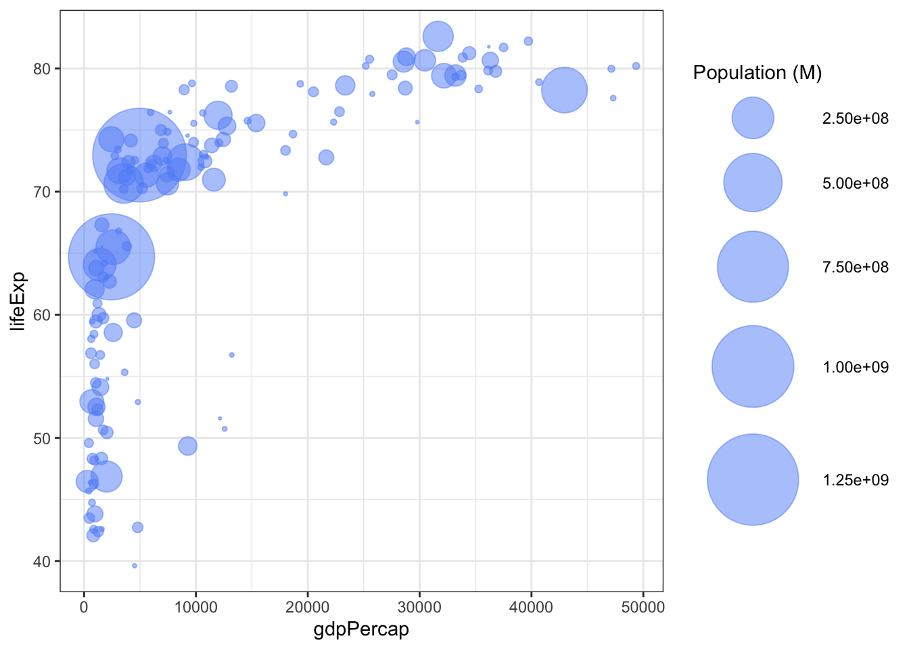
Colour - Hue
Hue is what we usually mean by ‘colour’. Hue can be used to highlight, identify, and group elements in a visual display.
Example: any
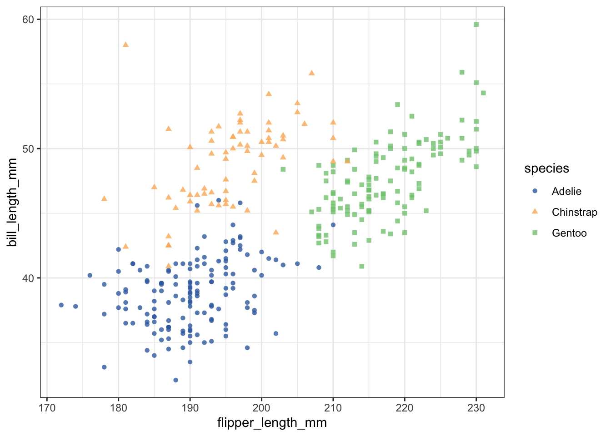
Colour - Saturation
Colour has many aspects. Saturation is the intensity of a single hue. Increasing intensities of colour can be perceived intuitively as numbers of increasing value.
Example: Heatmaps
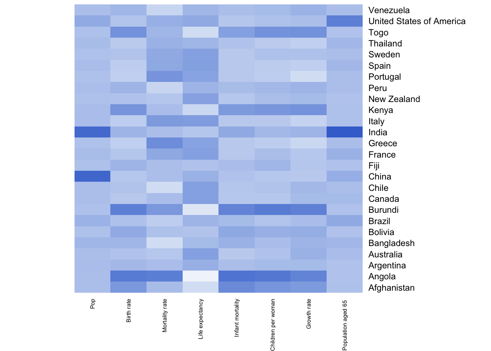
Shape
Groups can be distinguished by different shapes, though comparison requires cognition which makes it less effective than with colour.
Example: Glyph plots, Scatterplots
Warning: The `<scale>` argument of `guides()` cannot be `FALSE`. Use "none" instead as
of ggplot2 3.3.4.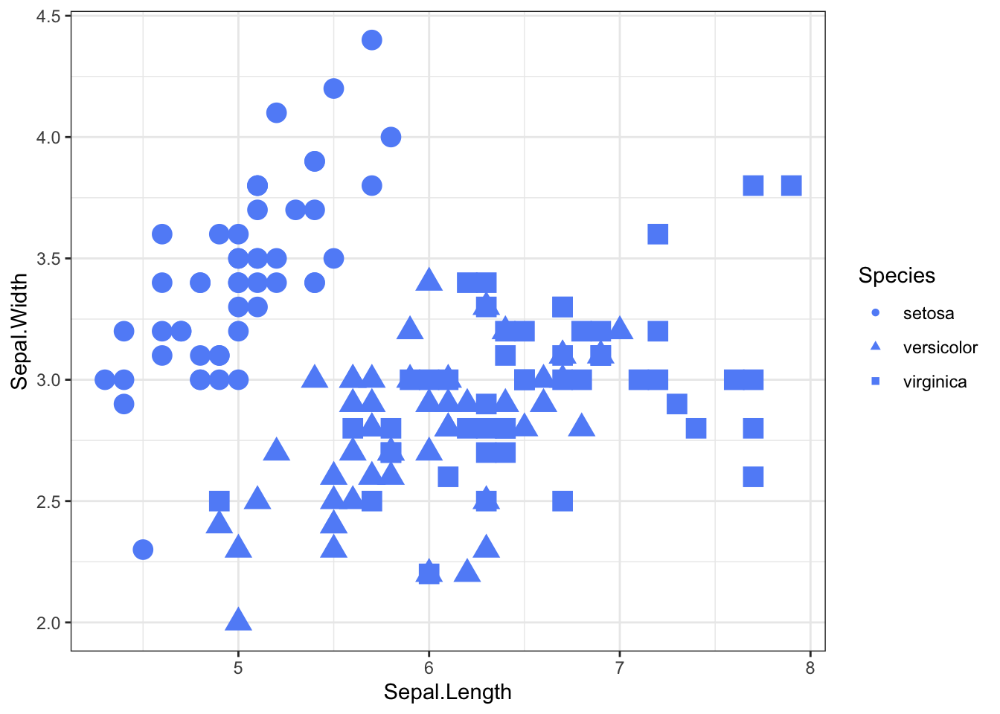
Texture
When colour is not available, different shadings or fills can be applied where previously we would use hue. Generally, these textures are seldom used in modern visualisations as they are less effective than colour.
Example: any
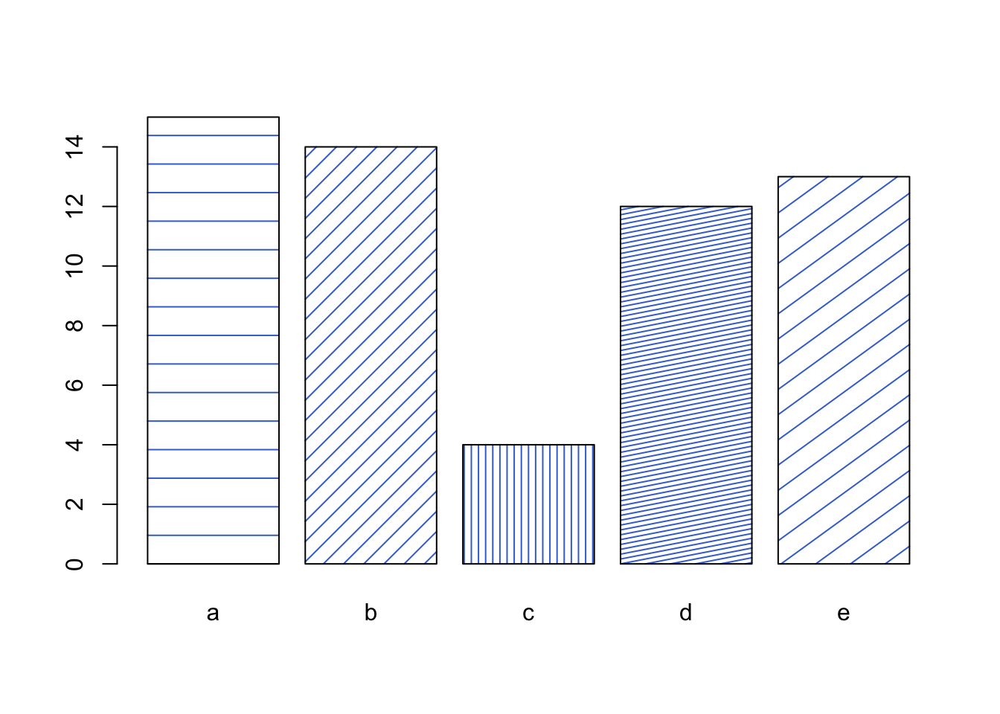
Volume
Volume refers to using 3D shapes to represent information. But 3D objects are hard to evaluate in a 2D space, making them particularly difficult to read effectively.
Example: 3D charts
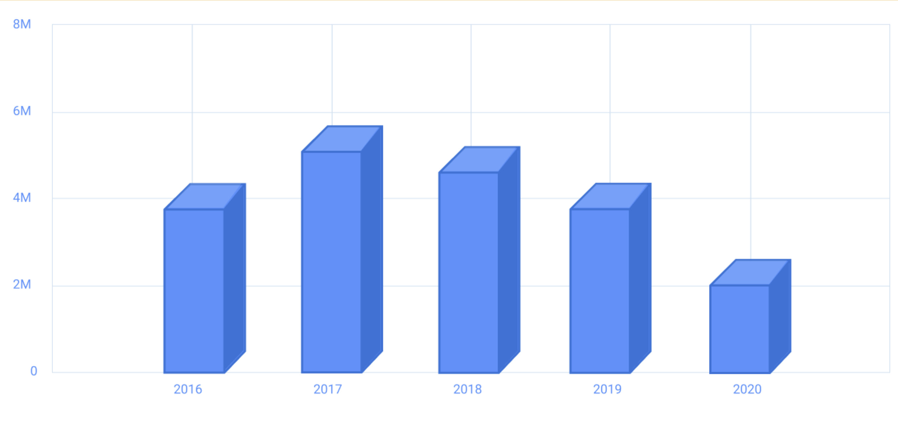 To make plots appear 3D in a 2D plot, we must introduce a forced perspective, which distorts the quantitative information that we’re trying to present. For example, consider the following 3D barplot:
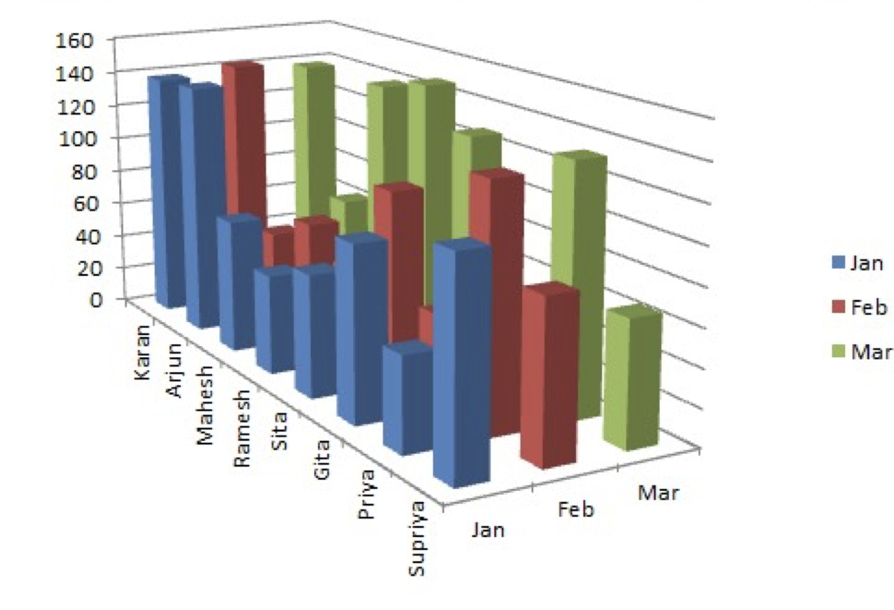
- Some bars get hidden behind others
- The perspective effect makes bars at the front appear taller than those at the back
- Its difficult to read the numerical values
- The quantitative data is only 1D -the vertical axis. The 3D chart has added 2 un-needed dimensions to the plot, which has compromised its ability to present the data without distortion.
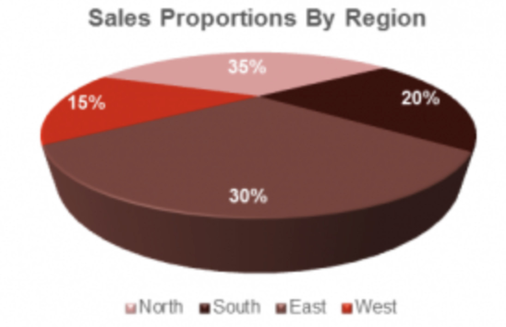
3D pie charts are even worse
Scale of accuracy
The different visual variables have different levels of efficiency when visually interpreting values of different size. Different tasks will have different rankings. In general, we should use encodings at the top of the scale where possible (and sensible). For instance, when assessing the magnitude of a quantitative variable, we would rank the encodings something like this:
- Position: Common Scale
- Position: Non-aligned Scale
- Length
- Direction
- Angle
- Area
- Colour: Hue
- Colour: Saturation
- Shape
- Texture
- Volume
Integral and separable encodings
When displaying multiple quantities, we can combine encodings:
- Some encodings can be combined and visually decoded separately. These are separable encodings.
- Other combinations cannot be easily decoded separately, and are integral encodings.
- Suppose the red point is of interest - finding it among a low number of points is relatively easy (top left). With only two encodings and low density, it is easy to spot the unusual point.
- Increasing the number of points makes it a little harder to find, but the contrast between colours helps (top centre). Position and hue are clearly separable encodings.
- If we repeat the same experiment but changing point shape instead, the task becomes harder (top right). Shape requires more effor to process as an encoding.
- Among 100 points, the triangle is almost lost. Shape is a more challenging feature to distinguish. (bottom left)
- Mixing colour and shape compounds the problem further! (bottom centre)

Here, we are juggling many data encodings at once. Horizontal and vertical position of the points indicate numerical values of two variables Colour and point shape indicating values of two categorical variables. Clearly, some aspects are more separable than others (e.g. x and y postition). Using many encodings with multiple different options to show your data become rapidly uninterpretable (below left), unless your data has a great deal of structure to help make sense of things (below right).
N <- 150
library(mvtnorm)
xs <- rmvnorm(150, c(0,0),matrix(c(1,0.5,0.5,1),nr=2))
cs <- cols[sample(1:4,N,replace=TRUE)]
ps <- c(3,15,16,17)[sample(1:4,N,replace=TRUE)]
par(mfrow=c(1,2))
plot(x=xs[,1],y=xs[,2],axes=FALSE,xlab='',ylab='',pch=ps,col=cs);graphics::box()
plot(x=xs[,1],y=xs[,2],axes=FALSE,xlab='',ylab='',pch=c(3,15,16,17)[cut(xs[,2],4)],col=cols[cut(xs[,1],4)]);graphics::box()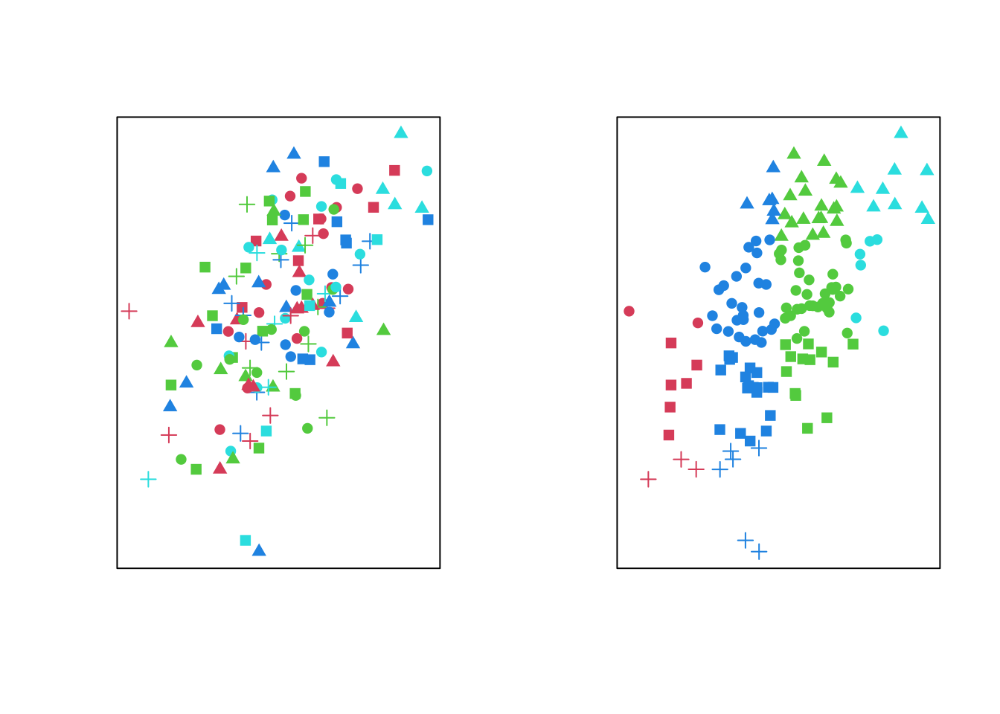
The plot below shows the prevalence of Diabetes and Obesity by county in the USA. Here, multiple inseparable encodings have been used, namely two colour hues with blue indicating obesity, and red indicating Diabetes, with intensity of the colours and their combinations showing the level of prevalance in each county. It is almost impossible to disentangle the obesity information from the diabetes information - these are integral encodings. The only obvious features are dark vs light shades of colour - the saturation.
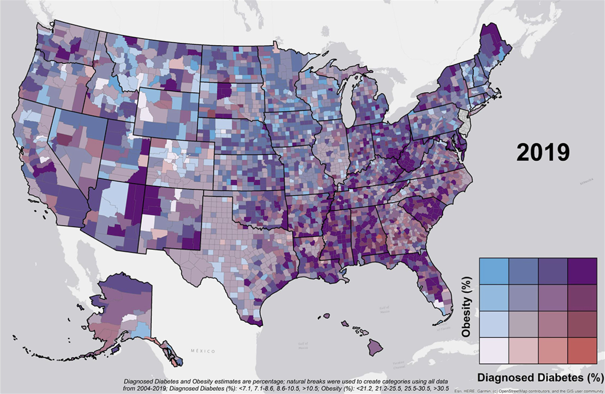
Gestalt principles
The human brain is wired to see structure, logic, and patterns. It attempts to simplify what it sees by subconsciously arranging parts of an image into an organised whole, rather than just a series of disparate elements. The Gestalt principles were developed to explain how the brain does this, and can be used to aid (and break) data visualisation.
- Proximity
- Similarity
- Enclosure
- Connectedness
- Closure
- Continuity
- Figure and Ground
- Focal Point
Proximity
The Proximity principle says that we perceive visual elements which are close together as belonging to the same group. This is easily seen in scatterplots, where we associatethe proximity in the plot with similarity of the object.
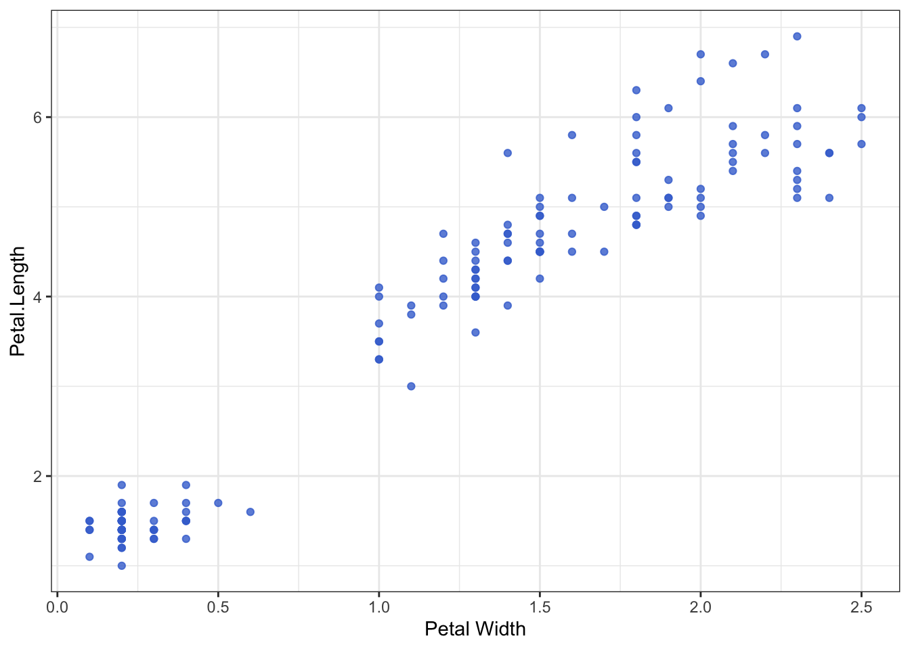
The same idea applies more generally and can be applied to other plots, where we can arrange the plot to group items we want to perceive as belonging together. Which of the two plots below best compares the sales per country?
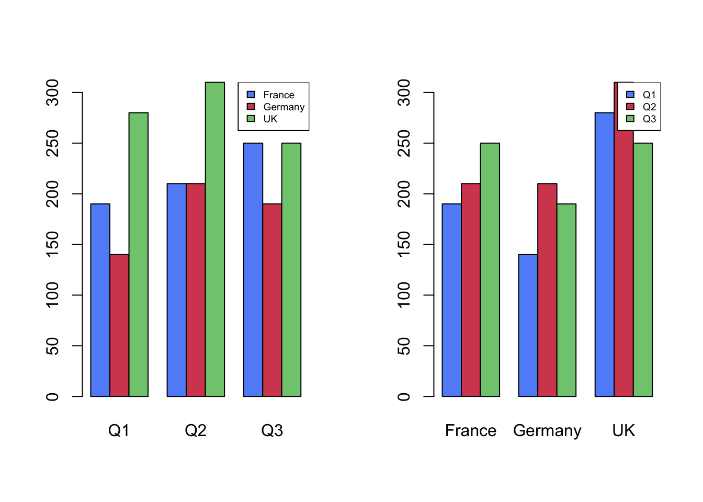
Recommendations to aid effective data visualisation:
- Spatial proximity takes precedence over all other principles of grouping.
- Use proximity to focus on the visualisation goal, by keeping the main data points closer together.
Similarity
We perceive elements with shared visual properties as being “similar”. Objects of similar colors, similar shapes, similar sizes, and similar orientations are instinctively perceived as a group. For example, in the scatterplots below the use of colour reinforces a sense of commonality with points of the same colour that is stronger than the three loose clusters we observe with proximity alone.
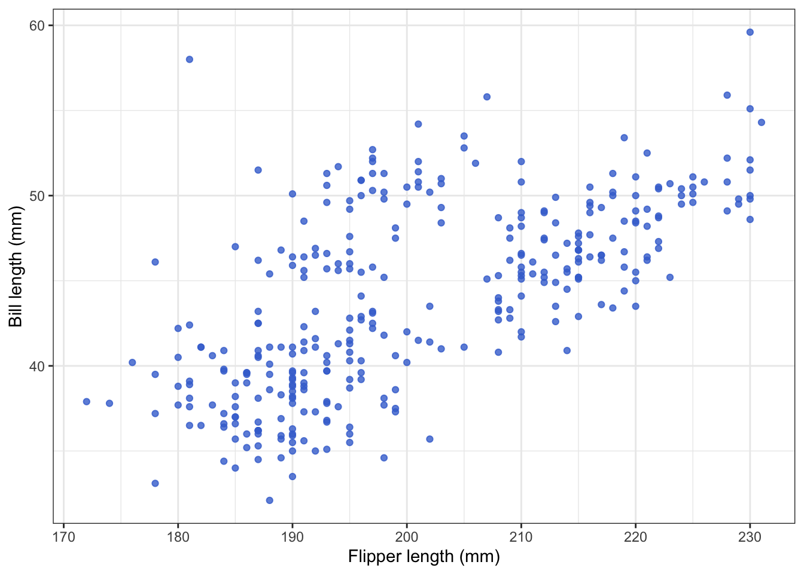
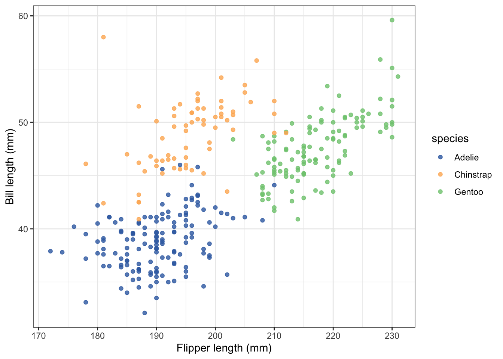
Recommendations to aid effective data visualisation:
- Use colour, shape, or size to group visual objects together.
- The Similarity Principle can help you more readily identify which groups the displayed data belong to.
- Colour can be used effectively when associated with intuitive quantities, e.g. red=financial loss, blue=negative temperature. Beware that association of colour with particular concepts varies around the world. An important example is that in Europe and the Americas coloring an upward trend in finanical markets usually uses green or blue is used to denote an upward trend and red is used to denote a downward trend, but in mainland China, Japan, South Korea, and Taiwan, the reverse is true.
- The idea can be useful when similar colours, shapes, sizes are used consistently across multiple graphics.
Enclosure
The enclosure principle addresses the fact that enclosing a group of objects brings our attention to them, they are processed together, and our mind perceives them as connected.
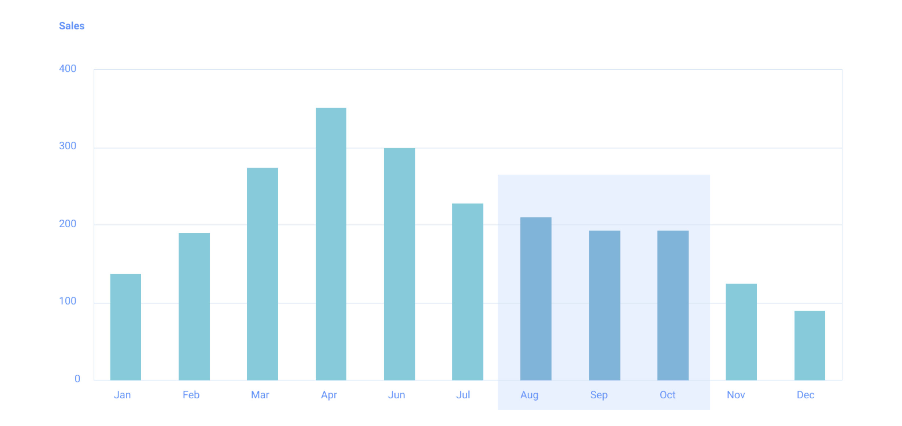
Recommendations to aid effective data visualisation:
- Enclose objects that you want to be perceived as grouped in a container.
- Enclosures can be used to highlight regions of a visualisation that can be “zoomed in” to give extra detail.
Connectedness
Connectedness says that objects that are connected in some way, such as by a line, are seen as part of the same group. This supersedes other principles like proximity and similarity in terms of visual grouping perception because putting a direct connection between objects is a strong factor in determining the grouping of objects.
Recommendations to aid effective data visualisation:
- Connecting grouped elements by lines is one of the strongest ways to visualise a grouping in the data
- This is particularly natural with time series, but generally should be avoided unless the x-axis has a similar meaning
- Parallel coordinate plots exploit this principle to connect individual data observations
Closure
Closure states that when the brain sees complex arrangements of elements, it organises them into recognisable patterns. While this is usually helpful, it can occasionally cause problems. When the human brain is confronted with an incomplete image, it will fill in the blanks to complete the image and make it make sense.
Consider the three plots of a time series below. The first plot is incomplete, showing a gap around 2013. Absent any other information, our brains would intuitively connect the lines on either side to give the impression of a behaviour like the plot in the middle. The true data actually followed the right plot. If we ignored the gap entirely and plotted all the data, we would draw a time series like the middle curve which would be highly misleading.
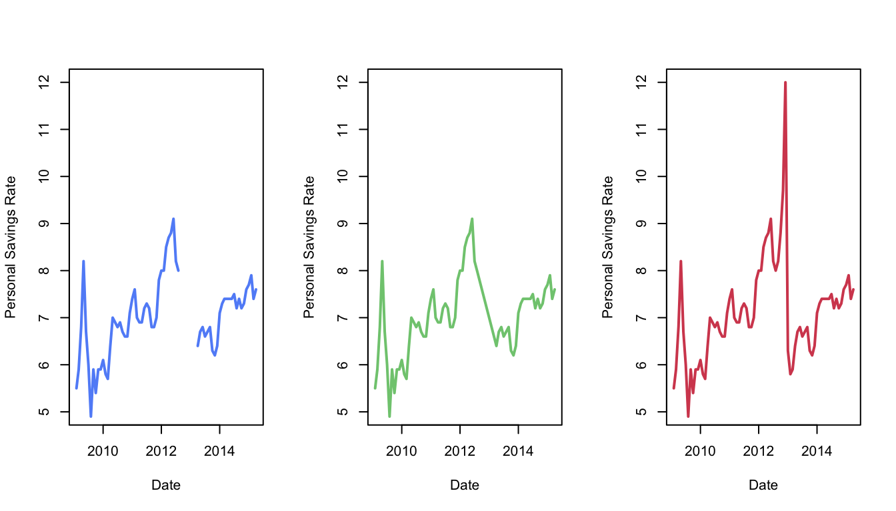
Recommendations to aid effective data visualisation:
- Be careful when showing graphs with breaks because the human mind tends to form complete shapes even if the shape is incomplete.
- Similarly, beware joining all points up with lines when there are large gaps in the data - this is just falling into the same trap!
- If your data have a lot of gaps, use points not lines.
Continuity
Continuity states that human brains tend to perceive any line or trend as continuing its established direction. The eye follows lines, curves, or a sequence of shapes to determine a relationship between elements.
For example, compare the two barplots below. The plot on the right is more easily readable than the one on the left.
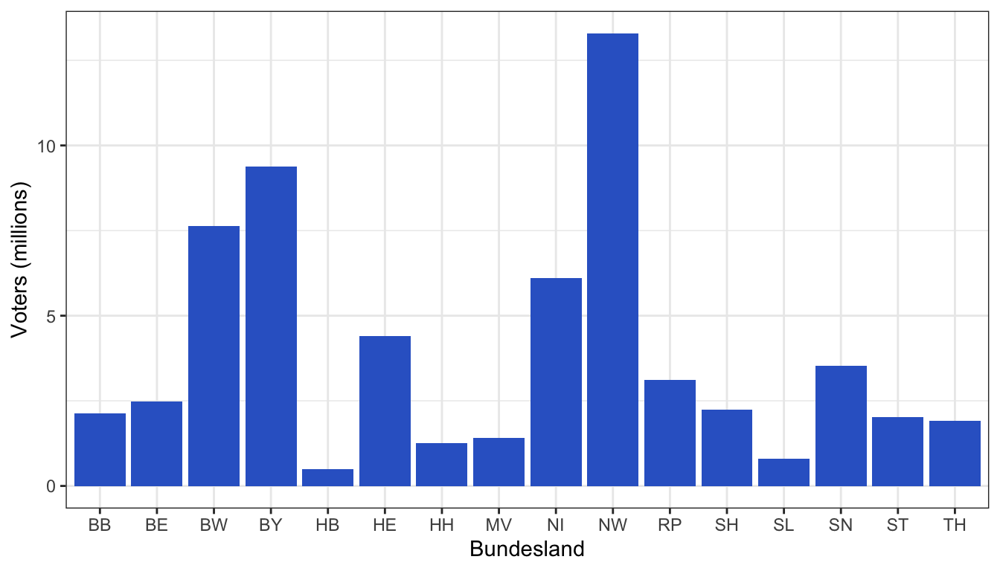
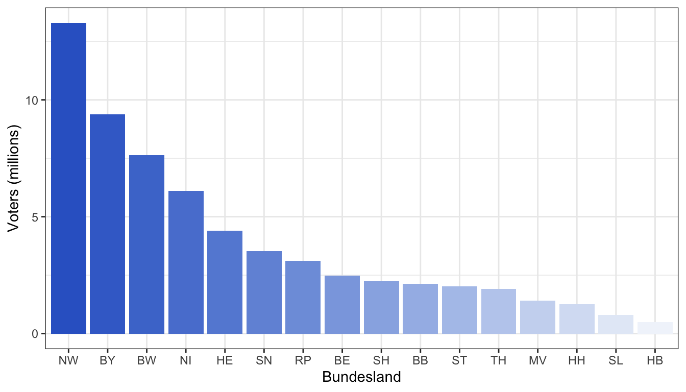
Recommendations to aid effective data visualisation:
- Arrange visual objects in a line to simplify grouping and comparison. This happens naturally on scatterplots with obvious trends. Another example would be using bar chars ordered by y-value.
- Using lines in time series graphs exploits continuity by joining points into a series
- This can be paired with using colour saturation to emphasise the continuity along a secondary encoding.
Figure and Ground
The Figure and Ground principle says the brain will unconsciously place objects either in the foreground or the background. Background subtraction is a “brain technique” which allows an images foreground shapes to be extracted for further processing. To ensure that we can easily recognise patterns and features in a visualisation, we must ensure that the background and foreground elements are sufficiently different that we can easily identify the data from the background of the plot.
The plots below are two examples of doing this badly. The low contrast between the background and the data points makes it difficult to read. In particular, beware using yellow or other pale shades on a white background as they can be rendered nearly invisible.
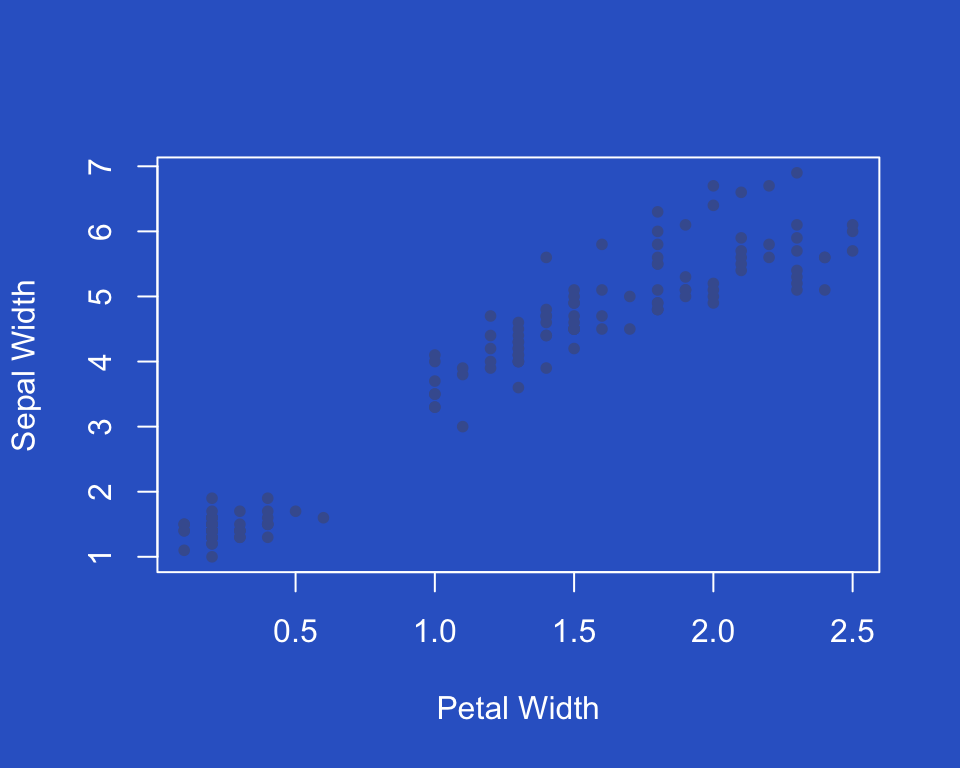
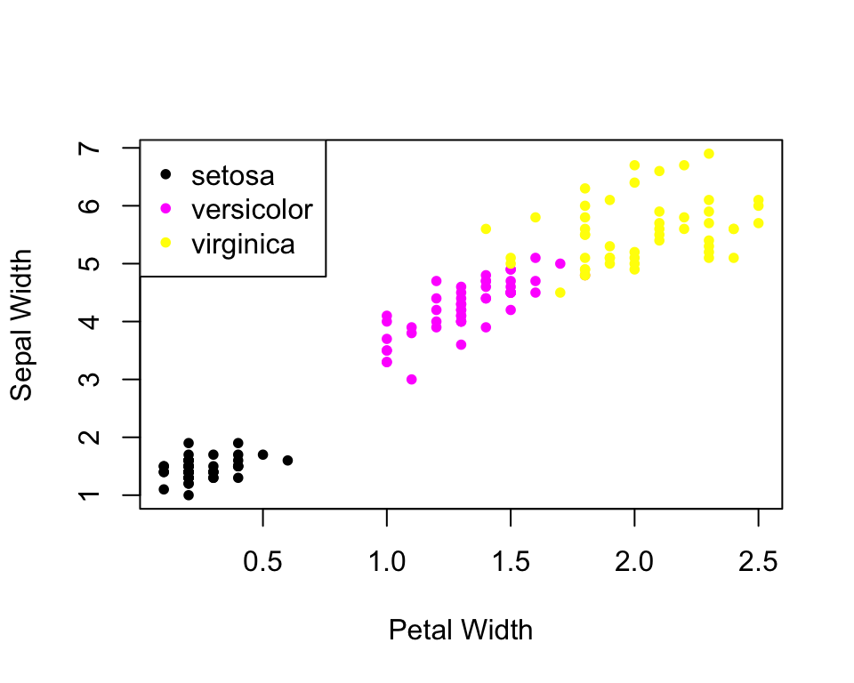
Recommendations to aid effective data visualisation:
- Ensure there is enough contrast between your foreground and background to make charts and graphs more legible and not misleading.
- Choose colours and contrast levels that make your foreground image stand out.
- Transparency can help push less important features to the background.
- Avoid colour overload with many different and contrasting colours. Stick to a small number of distinct hues, or a scale of different intensities.
Focal point
A relatively recent addition, the focal point principle says that elements that visually stand out are the first thing we see and process in an image. This is related to the Figure and Ground principle, where we make particular elements stand out prominently from the background.
Loading required package: grid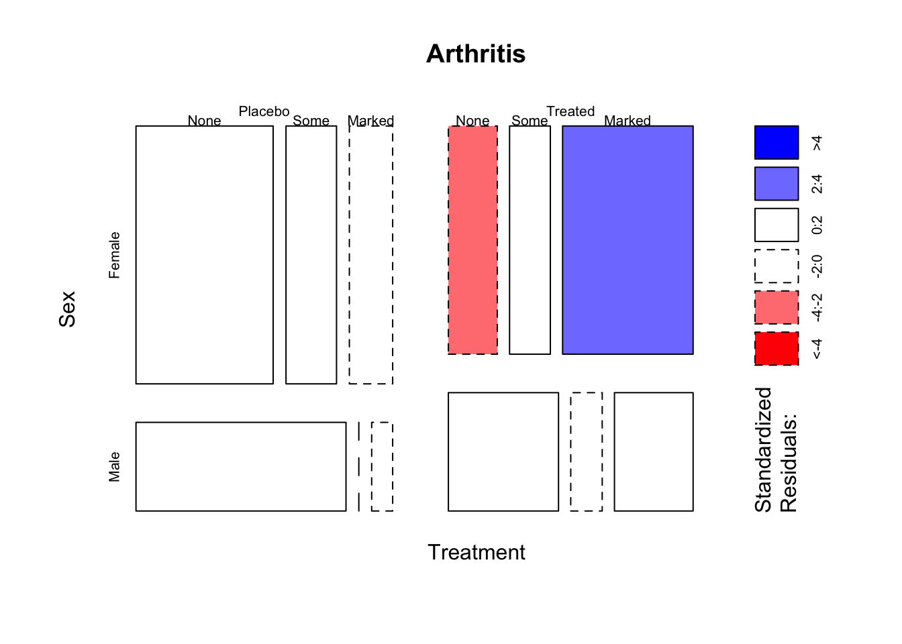
Recommendations to aid effective data visualisation:
- Distinctive characteristics (e.g., a different color or a different shape) can be used to highlight and create focal points.
- Mosaicplots with \(\chi^2\) shading automatically highlight “interesting” features, which immediately draws the eye
- Using a substantially different colour or intensity can make the feature ‘pop out’ into the foreground
What to avoid
The idea of ‘graphical excellence’ was developed by Edward Tufte. Excellence in statistical graphics consists of complex ideas communicated with clarity, precision, and efficiency. In particular, he said that good graphical displays of data should:
- show the data,
- induce the viewer to think about the substance,
- avoid distorting what the data says,
- present many numbers in small space,
- make large data sets coherent,
- encourage comparison between data,
- reveal the data at several levels of detail,
- have a clear purpose: description, exploration, tabulation or decoration.
Unfortunately, it’s all too easy (and sometimes tempting) to ignore some of these principles to try and prove a particular point.
Graphics reveal data
Recall the Anscombe quartet data were identical when examined using simple summary statistics, but vary considerably when graphed
library(datasets)
data(anscombe)| x1 | x2 | x3 | x4 | y1 | y2 | y3 | y4 |
|---|---|---|---|---|---|---|---|
| 10 | 10 | 10 | 8 | 8.04 | 9.14 | 7.46 | 6.58 |
| 8 | 8 | 8 | 8 | 6.95 | 8.14 | 6.77 | 5.76 |
| 13 | 13 | 13 | 8 | 7.58 | 8.74 | 12.74 | 7.71 |
| 9 | 9 | 9 | 8 | 8.81 | 8.77 | 7.11 | 8.84 |
| 11 | 11 | 11 | 8 | 8.33 | 9.26 | 7.81 | 8.47 |
| 14 | 14 | 14 | 8 | 9.96 | 8.10 | 8.84 | 7.04 |
| 6 | 6 | 6 | 8 | 7.24 | 6.13 | 6.08 | 5.25 |
| 4 | 4 | 4 | 19 | 4.26 | 3.10 | 5.39 | 12.50 |
| 12 | 12 | 12 | 8 | 10.84 | 9.13 | 8.15 | 5.56 |
| 7 | 7 | 7 | 8 | 4.82 | 7.26 | 6.42 | 7.91 |
| 5 | 5 | 5 | 8 | 5.68 | 4.74 | 5.73 | 6.89 |
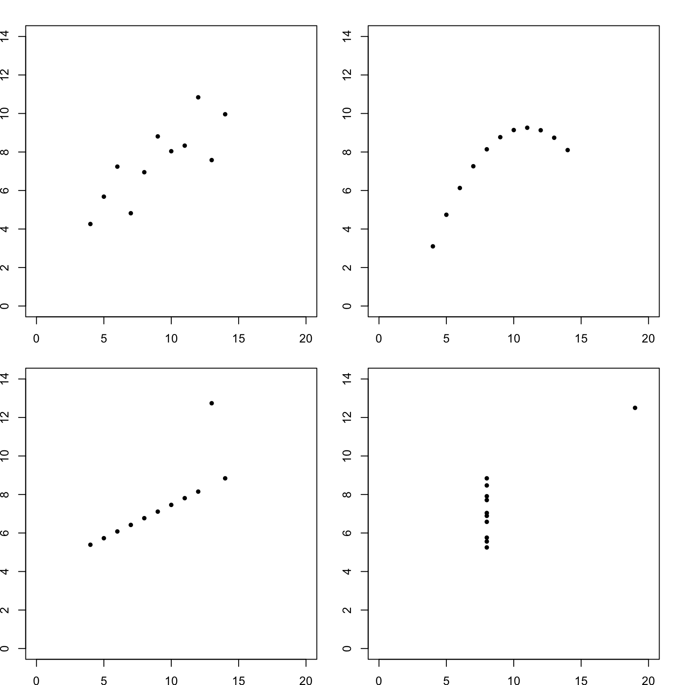
Garbage in, garbage out
An ill-specified hypothesis or model cannot be rescued by a graphic. No matter how clever or fancy they are!
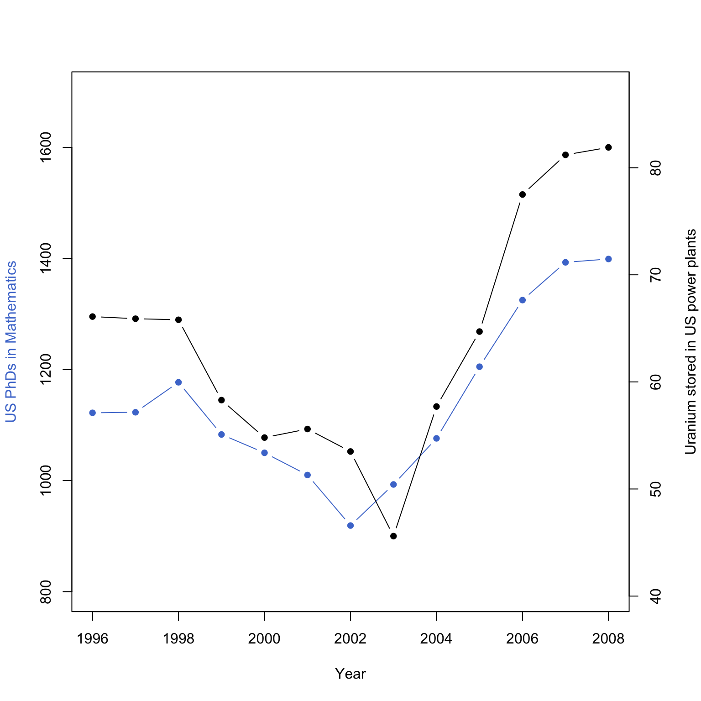
The correlation between these two series is \(0.952\), however there is obviously no genuine relationship here. Beware spurious correlations that lead to spurious conclusions, and remember that correlation does not imply causation!
Don’t Lie!
Graphs rely on our understanding that a number is represented visually by the magnitude of some graphical element.
“The representation of numbers, as physically measured on the surface of the graphic itself, should be directly proportional to the quantities represented.” — E Tufte
Tufte proposed measuring the violation of this principle by: \[ \text{Lie factor} = \frac{\text{size of effect in graphic}}{\text{size of effect in data}}\]
A good graph should be between 0.95 and 1.05. Anything outside of this is distorting the numerical effect in the data.
The image below is hopelessly distoring the proportions, which don’t even add up to one. The graphical element of six equal sized segments bear no resemblance to the data whatsoever!
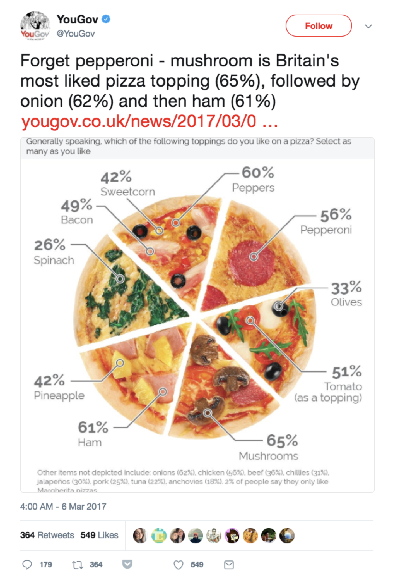
Don’t Distort
Axis ranges
Selective choice of axis ranges is one of the most common abuses of data graphics by disproportionately exaggerating visual effects. Where possible common axes should be used, and when emphasising relative values the inclusion of the origin (0) is recommended.
This plot from the Daily Mail below substantially distorts the data by starting the horizontal axis at 0.55 rather than zero. Notice how this substantially inflates the size of the blue bar relative to the red one.
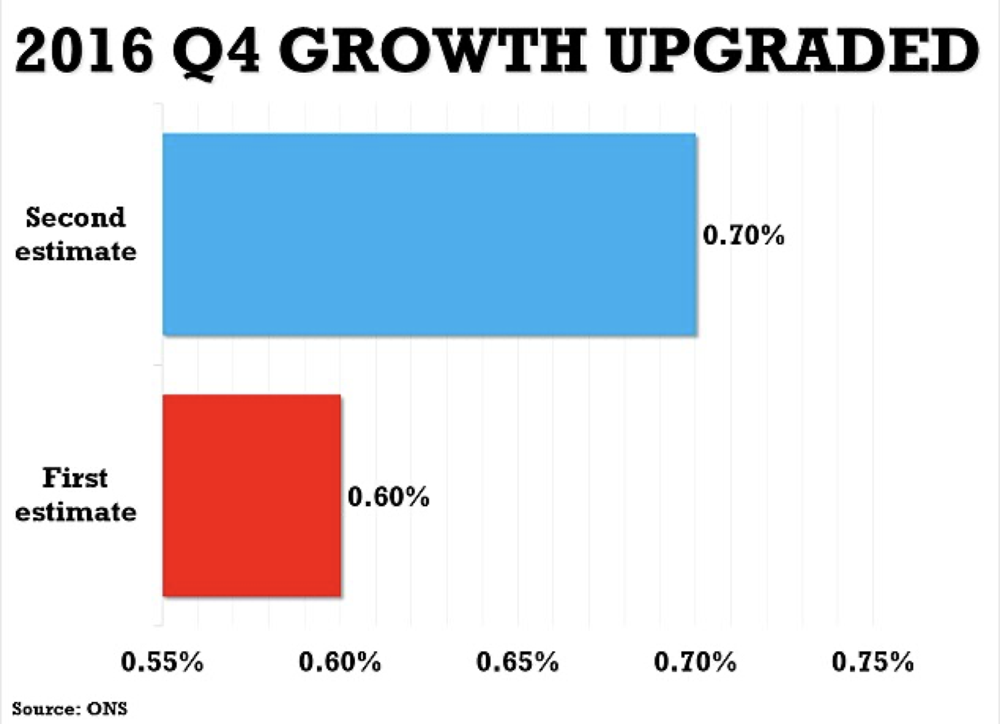
A more truthful plot would look like this.

Though it is questionable as to whether a plot is needed to compare \(0.6\) with \(0.7\)! We probably don’t need the machinery of data visualisation to assess this difference.
Axis labels
Omitting axis labels is perhaps even worse than being selective about what ranges you draw. Omitting numerical labels on the axes makes any meaningful comparison or interpretation impossible by removing the connection of the graphic with the numerical quantity it represents.
Politics is a common source of badly presented data distorted to prove a point. For instance, this tweet showing a selective part of a data set with no numbers to give any sens of scale:
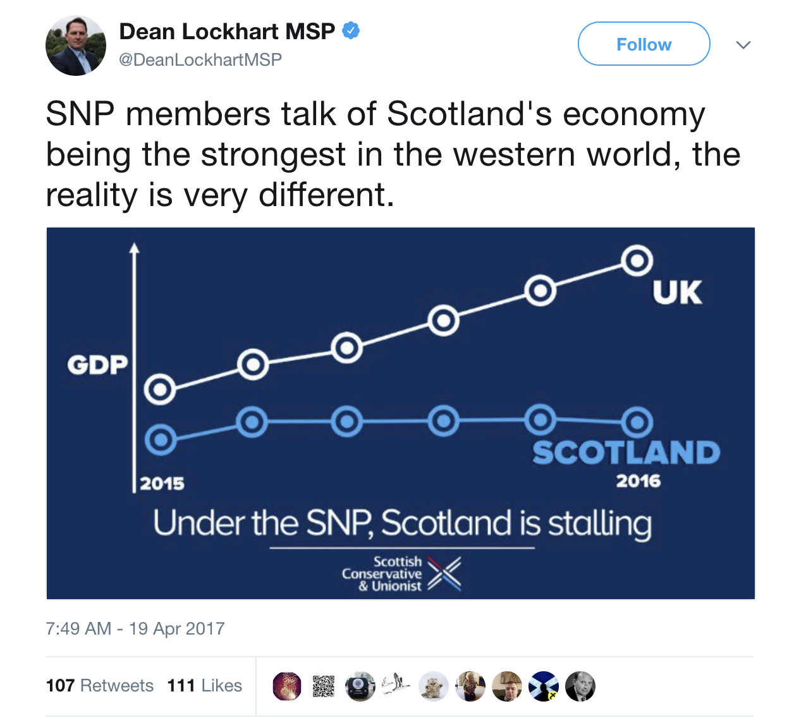
How big is the difference between these time series? 0.1? 1? 100? Accurate interpretation is impossible.
Whereas this shows a more complete picture, with a longer history:
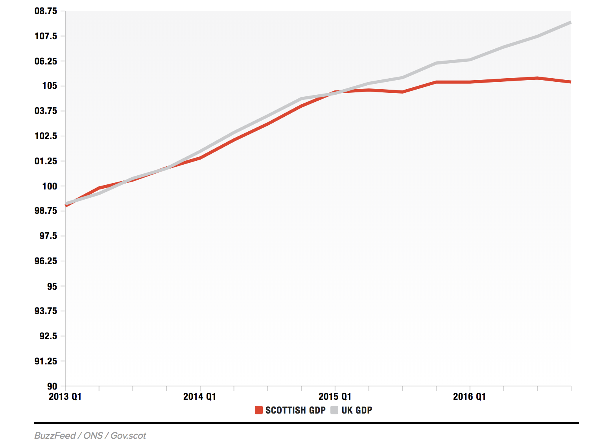
Bad perception
We rely on our visual perception to interpret the graphical elements in terms of numerical values. Plotting simple data using 3D plots introduce a forced perspective, unnecessarily distorting our perception of the data. In 3D plots, the plot region is no longer a rectangle but is distorted - compressing distances at one side and expanding them at the other.
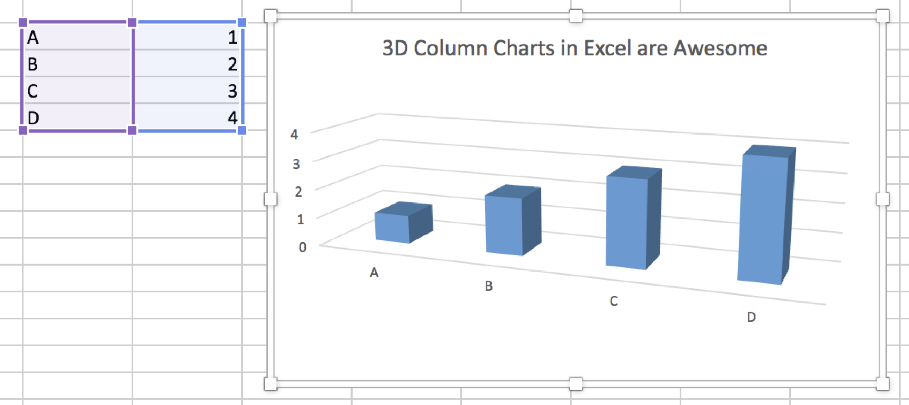
This is only plotting the integers 1 to 4, but it is not easy to identify the sizes of the bars. All of the bars appear to be smaller than their defined values, and it is difficult to assess relative sizes - does bar D really look \(4\times\) larger than bar A? Do we really need a barplot with a fake 3rd dimension to compare four integers?
Avoid chartjunk
Chartjunk is defined as content-free decoration of a data graphic that hinders the interpretation. This sort of nuisance decoration becomes problematic as it becomes hard to extract the data in the foreground of the plot when it is cluttered and surrounded by other decorations (see the Figure and Ground principle earlier). In general, avoid unnecessary distraction and focus on the data!
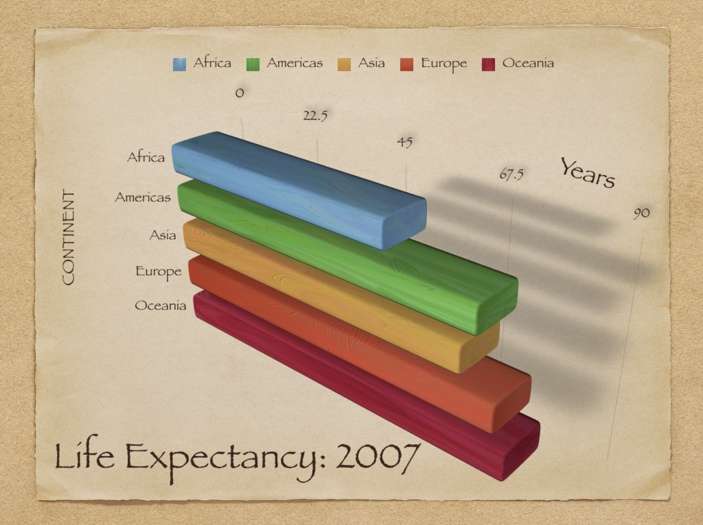
There are a lot of unnecessary and confusing elements to this simple plot:
- A very heavy 3D projection which seriously distorts the plot region
- A drop shadow that has no value
- Redundant use of bar labels and a plot legend.
- Colouring the bars is probably not even necessary, as the bars are already labelled and each bar has a unique colour
- Poor choice of colours - Europe and Oceania are two shades of red, implying a degree of similarity
Have Something to Say
A plot isn’t always the best way to show simple data - ask yourself if a drawing a plot is necessary. In particular, if the data are simple then keen the plot simple - contriving elaborate plots out of very little information is just confusing.
The plot below shows the proportion of students enrolling at a US college for two age groups - below 25, and 25+.
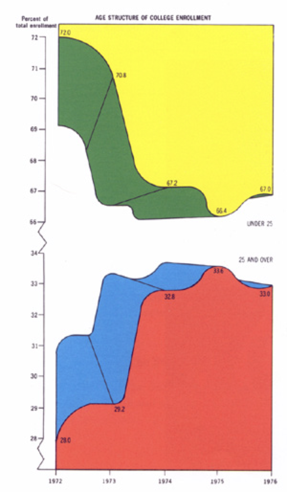
According to Edward Tufte in his book `The Visual Display of Quantitative Information’ (2002):
“This may well be the worst graphic ever to find its way into print.” — E Tufte
Since all students will fall into one group or the other, it is clear that we can get one time series by subtracting the other from 100%. So, this is trying to show a single time series of 4 points. However, they do just about everything wrong:
- The two time series being plotted are complementary (i.e. they sum to one), so plotting both series is redundant
- An exaggerated 3D effect is used for no reason
- Each series is shaded using two different colours
- The \(y\) axes ranges includes neither 0 nor 100, so and skips over two sizeable ranges of values (notice the squiggles)
- The data are interpolated with smooth lines in a rather strange way
If we were to just plot the data, we would simply see the following
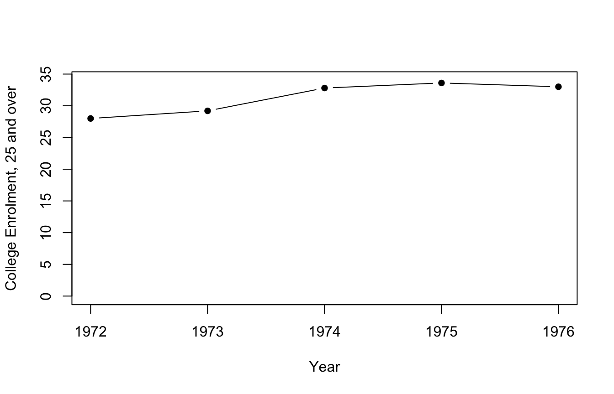
Bonus content: Using Colour Effectively
We have extensively used colour in our graphics to highlight features of interest, distinguish different groups, or even indicate values of quantitative variables. Encoding features with colour can be effective, but colour needs to be used appropriately to be successful.
Colour encodings
There are three common patterns of use of colour encodings:
- Categorical - distinguish different groups
- Sequential - indicate different levels of a quantitative variable
- Diverging - indicate different levels and direction of a quantitative variable
Categorical encodings are used to distinguish multiple different groups that have no intrinsic ordering, e.g. levels of a categorical variable. It is important to use a collection of sufficiently distinct and easily recognisable hues (colours) to easily distinguish multiple groups in your visualisation. The groups have no relationship, the hues should be as different as possible and preferably of a similar intensity. The main challenge with this encoding is that only a small number of categories can be encoded this way before we run out of sufficiently different colours.

Sequential encodings are used to represent values of a quantitative variable. By varying the intensity of the colour we can indicate a quantitivate variable by associating large values with more intense (saturated) colour, and lower values with less intense colours. A common example of this is on heatmaps, or more general maps such as of rainfall levels in weather forecasts. Typically, we restrict the colour to many shades of a single hue, but additional shades can be used if meaningful (e.g. to indicate extreme rainfall). While effective at highlighting major differences by major contrasts in the colour intensity, it is more challenging to detect smaller differences as subtle changes in colour and to decode numerical information from the plot.
Diverging encodings are used to represent the values and direction of a quantitative variable. Combining the two previous ideas, we use two sequential schemes based on substantially different hues (e.g. red and blue) that meet in the middle. Now the colour intensity indicates the magnitude of the value, and the hue of the colour indicates its direction. For example, we have seen this used already in plots of correlation matrices, where strong colour indicated strong correlations and red/blue indicated negative/positive correlation. Another common example is a maps of temperatures in weather forecasts, where warm temperatures use one hue and cold temperatures use another, and they meet in the middle.

Colour in R
While we may have a particular set of colours in mind to use with our visualisations, it can be difficult to set this up in R. There are many different ways to specify colours, and not all of them are intuitive to use:
- Integers codes: R interprets integer values as particular colours from its default palette. For instance, 1=“black”, 2=“red”, 3=“green”, etc.
- Colour names: R will a long list of named colours, e.g. “black”, “red”, “green3”, “skyblue“, “cyan”. The full list of names can be found http://www.stat.columbia.edu/~tzheng/files/Rcolor.pdf
- RGB and similar: Any colour can be represented as a combination of proportions of red, green and blue. R’s
rgbfunction will convert those red, green and blue amounts to a usable colour: black=rgb(0,0,0); green3=rgb(0, 205, 0, max=255), cyan=rgb(0, 255, 255,max=255). Thehsvandhclprovide similar functions using alternative colour specifications. - Hexadecimal: The RGB values can also be expressed as a hexademical code: black=“#000000”; cyan=“#00FFFF”.
Colour palettes
R has a default palette of colours used for the default colours in graphs. Integer colour codes are the corresponding colour in this default list. The default palette contains the following eight elements.
palette()[1] "black" "red" "green3" "blue" "cyan" "magenta" "yellow"
[8] "gray" pie(rep(1, 8), labels = sprintf("%d (%s)", 1:8, palette()), col = 1:8)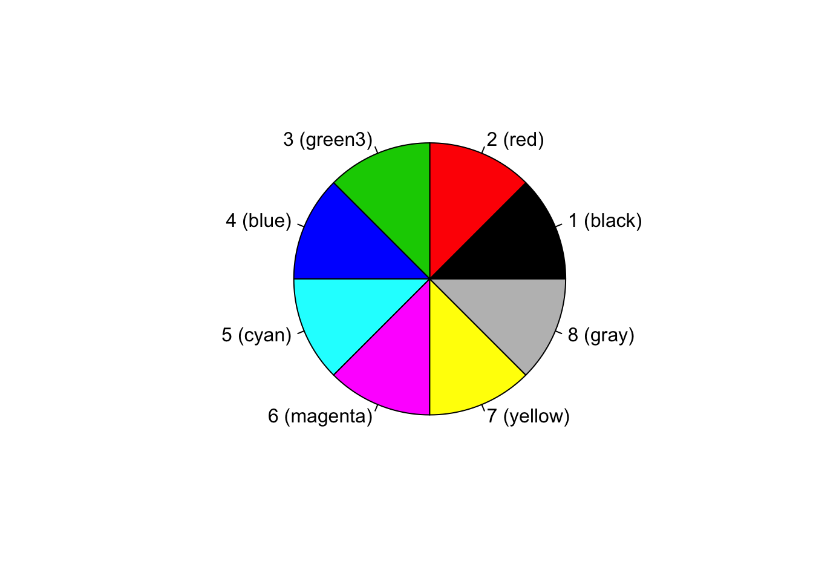
We can replace the standard palette with a vector of our own colours.
palette(c("black","#3366cc","#61D04F","#C45560", "#F5C710", "#CD0BBC"))
pie(rep(1, 6), labels = sprintf("%d (%s)", 1:6, palette()), col = 1:6)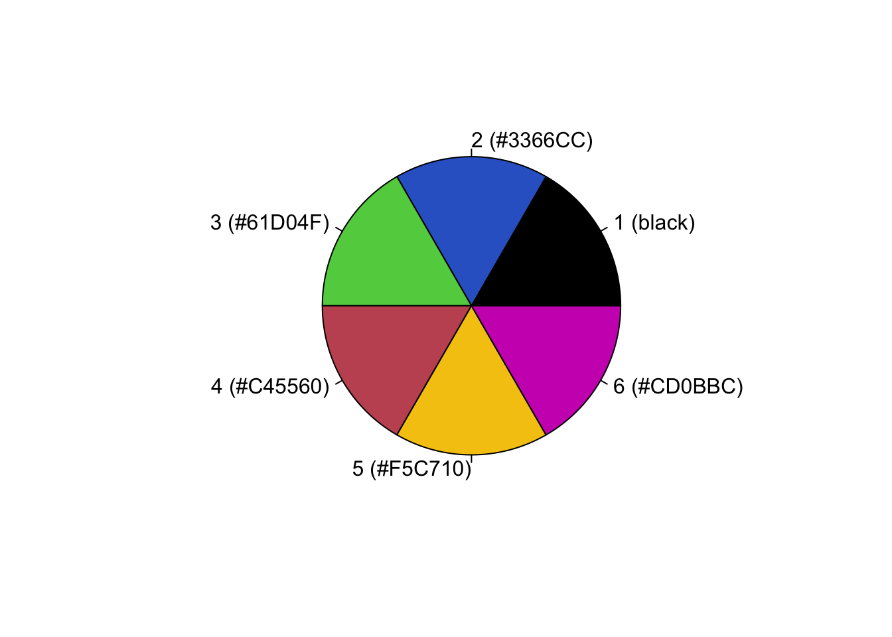
R also has a number of functions that will generate a list of n colours according to a particular scheme. These can be used to replace the default palette, or as input for a particular plot.
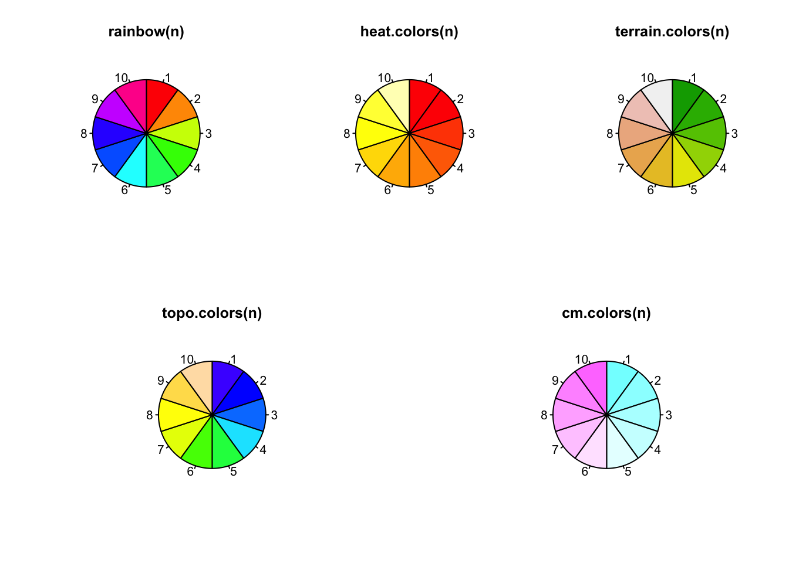
Which of these are better for: * categorical? * sequential? * diverging?
It is also worth noting that we’ve used these to colour area. Their effectiveness may vary when colouring points or lines.
Summary
- The human brain can read and process visual information far faster than any other form - this is why data visualisation is so effective.
- Data visualisation uses visual variables to encode the data in a graphical way.
- Some encodings are more effective than others. Some encodings work well together, and others less so.
- The Gestalt principles describe how the brain sees patterns - we can use this to create better/worse visualisations.
- Colour is an effective encoding, but we should carefully choose the colour palette to get the most out of it